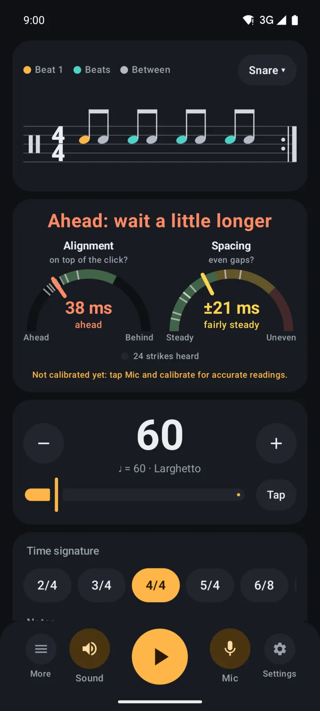
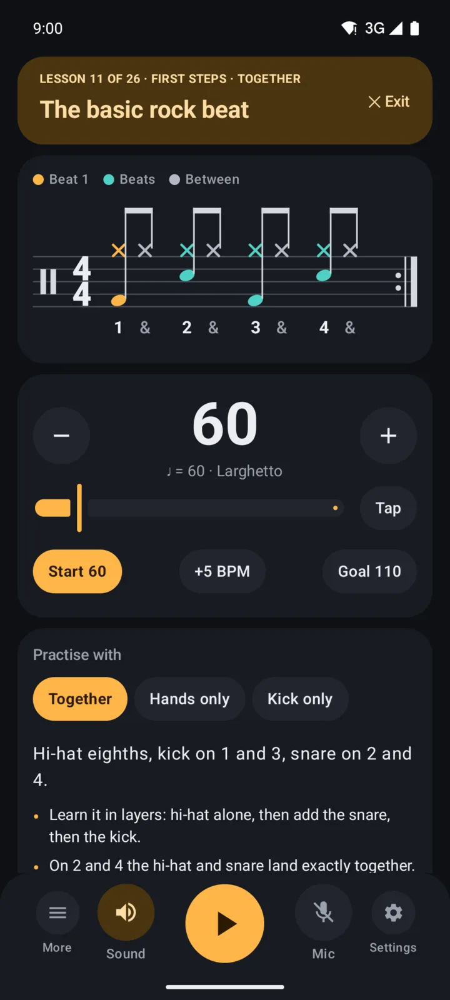
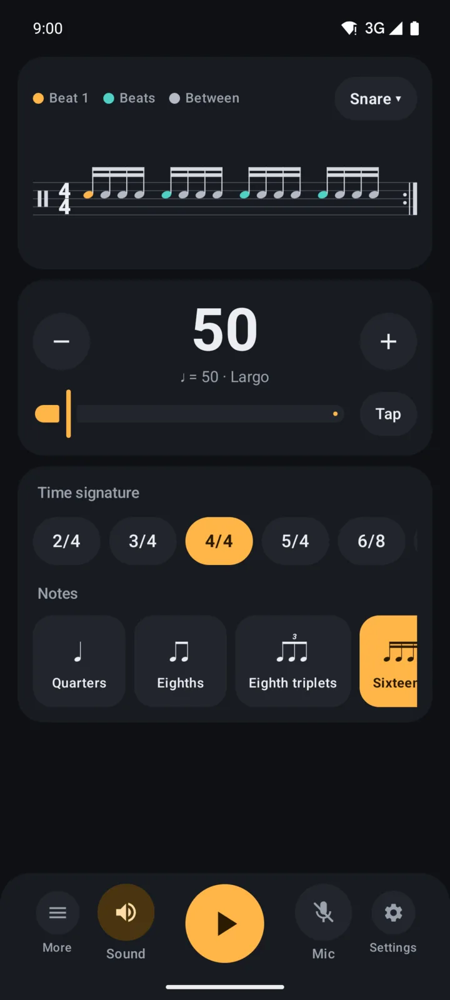
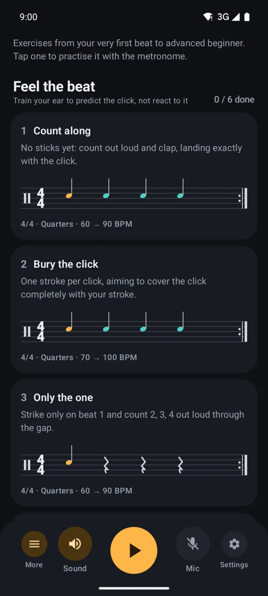
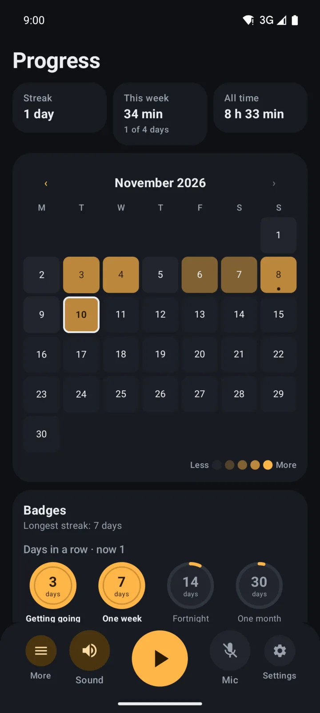
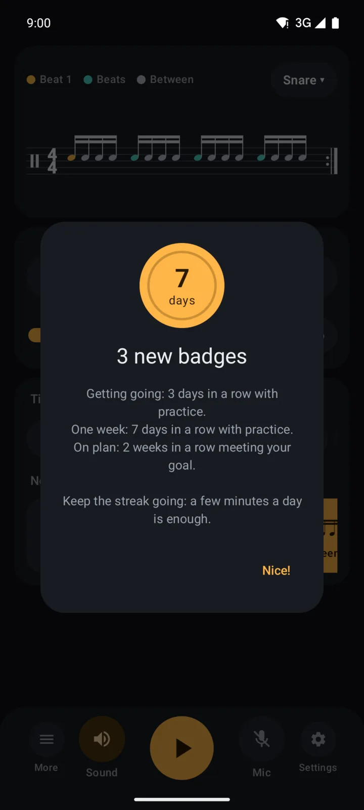
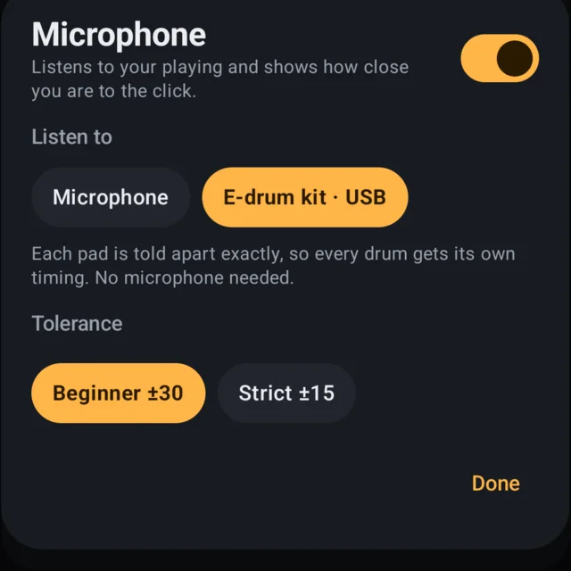
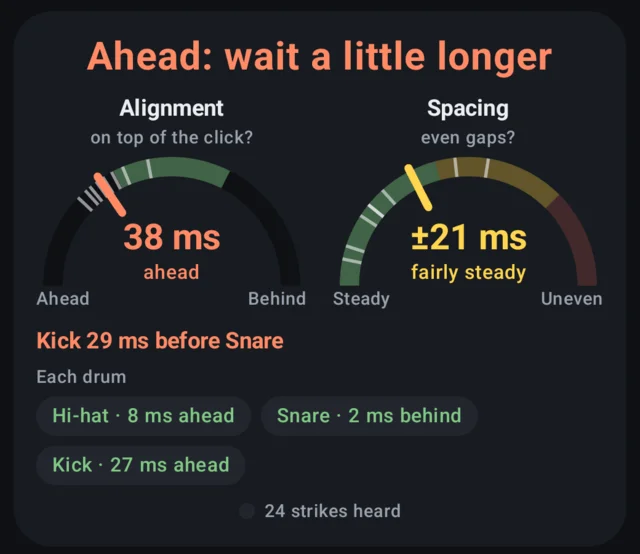

A clear, steady metronomeFree
Every common time signature, quarters to sixteenths and triplets, tap tempo and a choice of click sounds. The rhythm is drawn as real notation, so you see what you hear.
Drum Trainer & Metronome takes you from your very first beat to full grooves: step-by-step lessons, a timing coach that hears whether you're early or late, and a practice streak to keep you going. Plug in your e-drum over USB and every pad is timed exactly.
Android 8 and newer


Built by a beginner drummer, for beginner drummers on acoustic kits, e-drums and practice pads.
Every common time signature, quarters to sixteenths and triplets, tap tempo and a choice of click sounds. The rhythm is drawn as real notation, so you see what you hear.
From counting along and your first strokes to the basic rock beat, fills and sixteenths. Each lesson has a start tempo, a goal, tips and a two-bar count-in.
Play and two dials show whether you're ahead of or behind the click, and how even your strokes are. It hears an acoustic kit or a practice pad through the microphone, and an e-drum exactly over USB.
Practise with the right hand, the left, hands only or kick only. With an e-drum, each drum gets its own timing, and the coach tells you when kick and snare don't land together.
A practice calendar, timing trends over your sessions and a journal for notes on each day.
Set how often you want to practise, get a reminder at your time, and earn badges for days and weeks in a row.
Made for electronic kits. Plug your e-drum into the phone with a USB cable and the coach reads every pad directly: exact to the millisecond, each drum timed on its own, no microphone needed. How to connect →
Your microphone stays private. What the timing coach hears is analysed on your phone, never saved and never sent anywhere. No account, no ads, no tracking.




With an electronic kit the coach doesn't need the microphone. The module tells the app which pad you hit and when, to the millisecond. Kick, snare and hi-hat each get their own timing, and the click can never be mistaken for a hit.
Usually on the back or side, marked USB, USB MIDI or “to host”. It's one of these shapes:
One cable with the module's plug on one end and USB-C on the other, or the module's usual USB cable plus a small USB-C adapter (often sold as “OTG”). It must be a data cable: some cheap ones only charge.
The phone sees the kit straight away. There's nothing to install or pair.
Tap Mic, and under Listen to pick your kit. It's remembered for next time.

Each drum gets its own timing, and the coach points out drums that should sound together but don't, like a kick landing before the snare.

The metronome is free, always. Premium unlocks the coaching, and you can try all of it free for 7 days.
Prices in euros; Google Play shows the price for your country. Cancel the monthly plan during the free week and you pay nothing.
Yes, and that's where it's best. Connect the module by USB (see Connect your e-drum) and the coach reads every pad directly: exact timing for each drum, no microphone, any volume. If your module has no USB port, choose “Pad / e-drum” in the Mic settings and the microphone listens for the stick tapping the pads.
Any module that sends MIDI over USB, which includes most current kits. Look for a port marked USB, USB MIDI or “to host” on the module. Older modules with only a round 5-pin MIDI socket work through a USB-MIDI interface cable.
No. The microphone is analysed live on your phone to time your strokes. The last few seconds are kept in memory for “listen back” and then thrown away. Nothing is saved or uploaded.
Every phone plays and records sound with a small delay, often 50–100 ms. Calibrating once, in a quiet room, measures that delay so the coach can tell a few milliseconds early from late.
Yes. The app has no accounts, ads or chat and collects no personal data. Purchases go through Google Play, so Family Link can ask a parent to approve them.
In the Google Play app: tap your profile picture, then Payments & subscriptions, then Subscriptions. You can also open it from the app's Premium screen.
No. Sign in with the same Google account and tap “Restore purchases” on the Premium screen.
Found a bug, have an idea for a lesson, or need help with a purchase? Write to us, and if it's about a problem, tell us your phone model and Android version.
Write to supportapp_support.keenly472@passmail.com